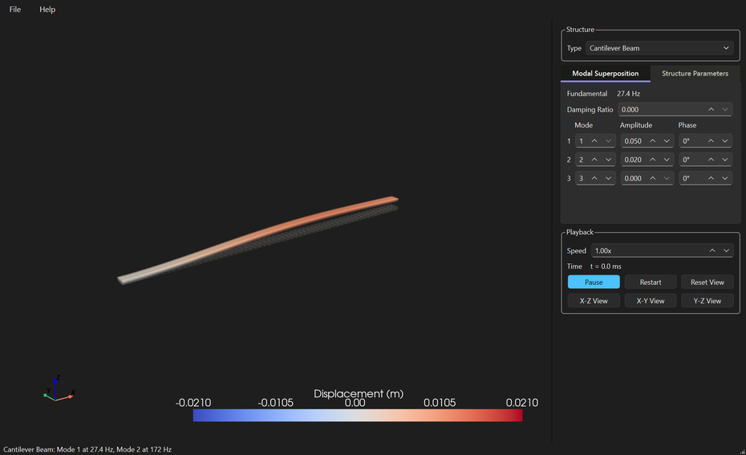

Watch a structure bend while it vibrates — in 3D, slowly enough to follow, from any angle.
A mode shape in a textbook is a frozen curve with arrows on it. You are told the beam waves like that, at some frequency, and you are left to imagine the motion. Most people never quite do — and the ones who do often end up carrying a picture that is subtly wrong, because the drawing shows the extreme and never the moment in between.
Structural Vibration View exists to replace that drawing with the motion itself. Pick a beam, a plate or a spring on a mass, give it dimensions and a material, and watch it deflect in a 3D view you can rotate, pan and zoom while it is moving. The frequencies are not typed in: they are computed from the size and the material you chose, so making the beam thicker changes both what you see and what it says.
.tvv file, and File → Open puts it all back — so a demonstration can be prepared once and reopened in front of a classThis is teaching software, and it says so rather than implying otherwise. Every structure is uniform, every result comes from closed-form theory, and there are no holes, joints, stiffeners or applied loads. It will show you how a shape wants to move and roughly how fast — it will not tell you whether your actual part survives, and it is not a replacement for a finite element model of a real component.
Nothing leaves your machine: no account, no telemetry, and no network use beyond opening the online manual if you ask for it.
Free, and you do not need Python or anything else installed. Version 0.1.0.
Download for Windows Download for macOS Source on GitHubBoth buttons bring you to the GitHub release page: scroll down to the Assets section. On Windows take structuralVibrationViewSetup-0.1.0.exe to install it, or StructuralVibrationView-0.1.0-portable.zip if you would rather unzip a folder and run it from anywhere. On macOS take StructuralVibrationView-0.1.0-macos.zip, unzip it and move the app to Applications. These are large downloads — 110 MB to 180 MB — because the whole 3D engine ships inside them.
The Windows installer is per-user, so it asks for no administrator rights and installs nothing machine-wide. On macOS the bundle is not notarised, so right-click the app and choose “Open” the first time rather than double-clicking. Every build is produced by a public workflow straight from the source, and is asked whether it kept its icons and its manual and can still build the real 3D view before it is published — a check worth having, because that engine is loaded by name rather than imported, so a bundle which quietly dropped it would start perfectly and then show an empty panel where the structure should be.
The first start takes a couple of seconds while the 3D engine loads, behind a splash screen.

Visit the Structural Vibration View SiteScreenshots of every structure, and the downloads.
All DownloadsInstaller, portable zip and the macOS app.
Read the ManualAlso on F1 inside the application.
Structural Vibration View is free and open source. There is no licence to buy, no account to make, no ads, and nothing about you is collected or sent anywhere. That is also why software like this is hard to sustain: there is no subscription to bill and no data to sell, so nothing pays for the work behind it.
Teaching software has to be right in a way a convenience tool does not. A renaming tool that misbehaves costs somebody an afternoon; a mode shape that is subtly wrong teaches somebody something false, and they may carry it for years. So the frequencies here are checked against published values rather than assumed, the honest limits are written on the screen instead of left out, and the awkward parts — packaging a 3D engine a build can silently lose, keeping a clamped plate within a percent of the literature — get the attention they need rather than the attention they would deserve commercially. A donation is what pays for that, and it funds the next free tool as well as the upkeep of this one.
If this made a mode shape finally make sense to you, or saved you explaining one at a whiteboard yet again, please consider chipping in.
DonateSecure payment through PayPal — no account required, and any amount is appreciated. Thank you for supporting independent, open source software.